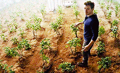
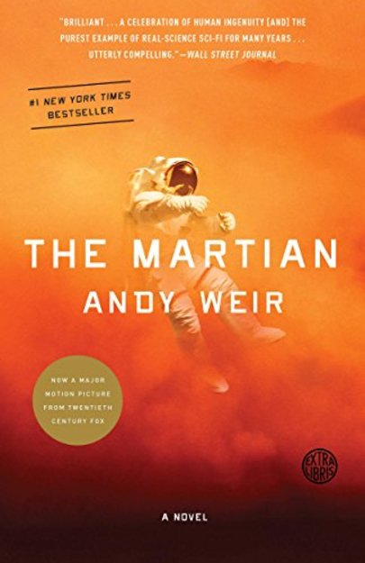

Марсианин- кратко о книге


Марсианин
Шесть дней назад астронавт Марк Уотни стал одним из первых людей, ступивших на Марс. Сейчас он уверен,
что будет первым, кто там умрет. После того как песчаная буря чуть не убила его и заставила его команду
эвакуироваться, считая его погибшим, Марк понимает, что он остался совершенно один, без возможности
связаться с Землей, чтобы сообщить, что он жив, а даже если бы и мог, его запасы иссякнут до
прилета спасательной миссии. Однако шансы умереть от голода невелики. Он скорее может умереть от
повреждений техники, суровой окружающей среды или простой «человеческой ошибки». Но Марк не готов
сдаться. Опираясь на свою изобретательность, инженерные навыки и неустанный, упорный отказ бросить
попытки, он стойко преодолевает препятствия одно за другим. Достаточно ли его изобретательности,
чтобы преодолеть все препятствия?